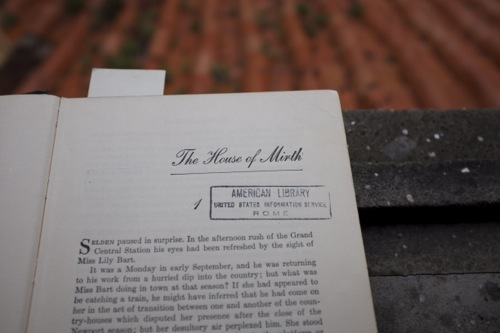
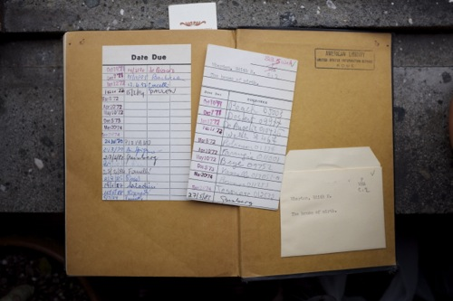

The Pleasure of Reading Old Books

“The House of Mirth” on the roof.
Last week I checked out The House of Mirth from the centro studi americani and the edition the library gave me was published in 1933. The spine is wobbly and the signatures separate to let me see the threads binding the book together. But yet it is a sturdy, wonderful thing that has withstood passing through many hands. On the backboard and front and back pages there are no blurbs, no author bio and no one-bite synopsis. The text of the novel is the only text printed on the thick yellowing paper. Edith Wharton’s signature are the only words embossed on the cover.
And not only is it a pleasure to touch an old book but it’s a pleasure to read one. The House of Mirth was first published in 1905. The weird punctuation (commas breaking verbs from their subjects) and the upright conversations (any example from the society scenes would suffice) and the situations the characters find themselves in that now seem almost absurd, but are still believable and still relatable somehow (Lily Bart, come on! all she does is slink around the edges, never confronts her admirers, or herself, head on) are as much a sign of the times as of the author herself and contribute to making this book so charming.
These oddities of age stand out in relief because I picked up The House of Mirth after reading three big contemporary novels in a row: The Luminaries by Eleanor Catton, The Goldfinch by Donna Tartt and Americanah by Chimamanda Ngozi Adichie. These books were all hardcover, too, but made to quickly fly off the shelf: blurbs and author photos and twitter handles cover the dust covers; exquisite punctuation holds the sentences together; and a polished structure holds each story up. I liked each of these books, for very different reasons, but their very shine, sometimes, made them tiring. And the physical act of reading one is incomparable to the simple and visceral pleasure of reading an old book.

The most popular library book I’ve checked out so far.
· · · · · · · · · · · · · · · · · · · ·